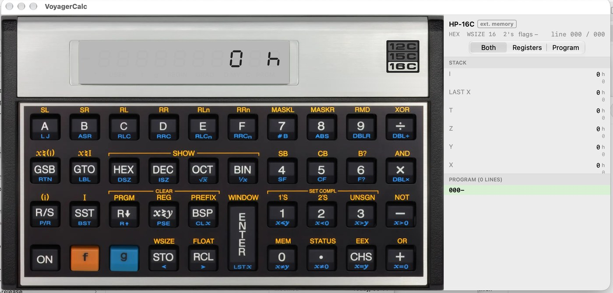
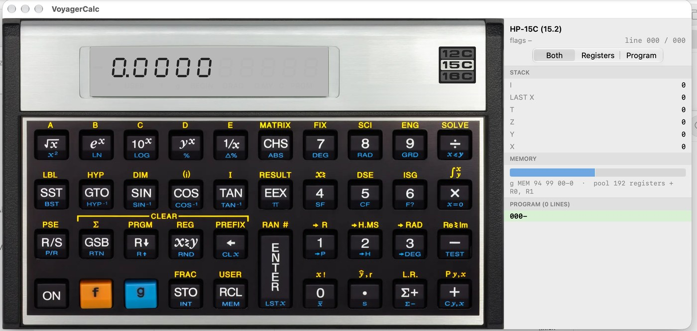

VoyagerCalc is a free desktop application, published by The Calculator Store, that puts an HP Voyager calculator on your computer screen. It does not imitate the calculator with its own maths: it emulates the ARM chip inside the HP Collector’s Edition (CE) calculators and runs the firmware file of your own calculator on it. The calculator on screen therefore behaves exactly as that firmware does.
Version 0.7.4 supports the HP-16C CE (computer scientist / programmer’s calculator) and the HP-15C CE (scientific calculator), and also the HP-12C CE (financial calculator), which this manual mentions only where it behaves differently.
.15c format of Torsten Manz’s HP-15C Simulator..bin file of your own calculator (about 112 KB). See chapter 11 for where to get it. Using firmware is at your own responsibility..15c) is available only for the HP-15C; on the 12C and 16C the items are disabled (“HP-15C only”).Earlier changes, briefly: 0.7.2 added .15c program import/export and a new 16C face; 0.7.1 added the Matrix Editor, Paste/Copy Matrix, Click f/g Labels, Key Click Sound, real-time-only speed (Turbo mode removed; program speed now matches a real 15C CE) and 16C memory-file layout checks; 0.7.0 was the first Linux and Windows release with the inspector, PDF documentation export, memory files and the USB link.
This manual describes VoyagerCalc 0.7.4 as found in its README, installation guides and source code for the 0.7.4 release (draft, October 2026). Menu names are given as . Shortcuts are written for Windows/Linux as Ctrl; on macOS use ⌘ instead. Operating the calculators themselves (RPN, programming, matrix and integer functions) is covered by HP’s owner’s handbooks for the HP-15C and HP-16C and is not repeated here.
| Platform | Requirement | Download |
|---|---|---|
| macOS | macOS 14 (Sonoma) or newer.From the app’s deployment target (macOS 14.0) in the source. | VoyagerCalc-0.7.4-macOS.dmg or …-macOS.zip |
| Windows | Windows 10 or 11, 64-bit. x64 build for Intel/AMD PCs (also runs on Windows on ARM, more slowly, through emulation); arm64 build for Windows on ARM (for example Windows 11 in Parallels on an Apple Silicon Mac). No administrator rights needed. | VoyagerCalc-0.7.4-windows-x64-setup.exe / …-x64.zipVoyagerCalc-0.7.4-windows-arm64-setup.exe / …-arm64.zip |
| Linux | 64-bit desktop, Debian 13 / Ubuntu 24.04 or newer, x86_64 (Intel/AMD) or arm64. Qt 6.8 is bundled: no other software has to be installed. | VoyagerCalc-0.7.4-linux-x86_64.tar.gzVoyagerCalc-0.7.4-linux-arm64.tar.gz |
Also needed:
.bin, about 112 KB) for your calculator: official HP firmware or one of the test / extended firmware builds (see chapter 11).All downloads are attached to the GitHub release v0.7.4:
github.com/Divasson2/VOyagerCalcLinux/releases/tag/v0.7.4
Each release includes a file SHA256SUMS that lists the SHA-256 checksum of every file. Download it into the same folder as your package and check that the checksums match before installing.
| System | Command (run in the download folder) |
|---|---|
| Linux | sha256sum -c --ignore-missing SHA256SUMSExpected output: VoyagerCalc-0.7.4-linux-x86_64.tar.gz: OK |
| macOS (Terminal) | shasum -a 256 -c --ignore-missing SHA256SUMSor shasum -a 256 VoyagerCalc-0.7.4-macOS.dmg and compare by eye |
| Windows (PowerShell) | Get-FileHash .\VoyagerCalc-0.7.4-windows-x64-setup.exe -Algorithm SHA256then compare the hash (case does not matter) with the line in SHA256SUMS |
The checksums of each release are published in its SHA256SUMS file (see Appendix A). If a checksum does not match, delete the file and download it again.
VoyagerCalc-0.7.4-macOS.dmg (or the .zip) from the release page..dmg and drag VoyagerCalc into your Applications folder (from the .zip: double-click to unpack, then move the app to Applications).The Mac app is Developer ID signed, notarized and stapled, so Gatekeeper should open it without warnings. It runs in the macOS App Sandbox with access to files you choose, to USB (for the calculator link) and to the folder ~/Documents/VoyagerCalc Backups/.
Choose the build: arm64 for a Windows-on-ARM computer, x64 for an Intel/AMD PC.
VoyagerCalc-0.7.4-windows-x64-setup.exe (or …-arm64-setup.exe).%LOCALAPPDATA%\Programs\VoyagerCalc.VoyagerCalc-0.7.4-windows-x64.zip (or …-arm64.zip) and choose Extract All….VoyagerCalc.exe.The Windows programs and installers are code-signed with Azure Artifact Signing. If SmartScreen still shows a warning, see Troubleshooting.
VoyagerCalc-0.7.4-linux-x86_64.tar.gz (Intel/AMD) or …-linux-arm64.tar.gz (ARM).tar xzf VoyagerCalc-0.7.4-linux-*.tar.gz)../install.sh as your normal user (not with sudo; it asks for the password itself when needed).
~/.local/opt/VoyagerCalc, adds a command link ~/.local/bin/voyagercalc, an icon and an entry in the applications menu. An older installation is replaced; your firmware and files are kept./etc/udev/rules.d/99-voyagercalc.rules. This needs administrator rights once: a password window opens, or it asks in the terminal (your password if you may use sudo, otherwise the root password). If neither works it prints one line to paste into a terminal. The program is installed in every case; USB access can be set up later with or sh ~/.local/opt/VoyagerCalc/share/usb-access.sh.~/.local/opt/VoyagerCalc/bin/voyagercalc.Installer problems: run ./install.sh --verbose and attach ~/.local/share/voyagercalc/install.log to an issue. To build from source instead, see docs/BUILD.md in the repository (CMake ≥ 3.21, C11/C++17 compiler, Qt 6.4+).
On first start VoyagerCalc shows a welcome screen: “This app runs the firmware of your own CE calculator (12C, 15C or 16C, including multi-model builds)”.
.bin file you flash to the calculator (about 112 KB). You can also drop the file onto the window.The remembered firmware, the calculator’s saved state and your program notes are stored in:
| Linux | ~/.local/share/VoyagerCalc |
| Windows | %LOCALAPPDATA%\VoyagerCalc |
| macOS | the app’s Application Support folder (inside its sandbox container) |

The model you get is decided by the firmware file: an HP-16C CE firmware starts an HP-16C, an HP-15C CE firmware an HP-15C. Choose the firmware for the calculator you want with (or drop the .bin on the window). Switching to another firmware first saves the memory of the firmware that is running, so each firmware keeps its own memory.
Some firmware builds contain several calculator images (“multi-model builds”). Then the menu lists them, for example 12C, 15C, 15C (15.2) and 16C, and you can switch between them.
The Mac app’s menu also has a Keyboard choice (Automatic (from firmware), 16C, 15C, 12C) and a Face choice (Photo or Drawn).
(Ctrl+B / ⌘B) opens a separate window with a photograph of the back of the calculator, with its printed reference tables. Resize the window freely; the picture keeps its proportions.
.bin, a memory file (2048 bytes or a .bin15c/.15c-type ending) or a program-notes file (.voyagerdoc).On both models the f and g keys are reached with Shift and Alt as described above. On the 16C, the letter keys A–F type the hexadecimal digits. The tables come from the app’s key definitions (the same tables are used by the Mac app).
| Action | Windows / Linux | macOS |
|---|---|---|
| File ▸ Open Memory File… | Ctrl+O | ⌘O |
| File ▸ Save Memory File… | Ctrl+S | ⌘S |
| File ▸ Program Info… | Ctrl+Shift+I | ⇧⌘I |
| File ▸ Export Program Documentation (PDF)… | Ctrl+Shift+E | ⇧⌘E |
| File ▸ Quit | Ctrl+Q (Linux); on Windows close the window | ⌘Q |
| View ▸ Registers & Program (show/hide) | Ctrl+I | ⌘I |
| View ▸ Show Calculator Back (HP-15C, HP-16C) | Ctrl+B | ⌘B |
| Calculator ▸ ON / OFF | Esc | Esc |
| Calculator ▸ Matrix Editor… (HP-15C) | Ctrl+Shift+M | ⇧⌘M |
| Edit ▸ Paste Matrix… (HP-15C) | – (button in the Matrix Editor) | ⇧⌘V |
The real calculator has functions reached by holding keys while pressing ON. The menu performs them for you (the calculator is turned off, the keys held, ON pressed):
| Menu item | Keys | What it does |
|---|---|---|
| Service Menu | g-ENTER-ON | Checksum (2), model (4), speed (5), key settings (6–8). ON leaves the menu. |
| USB Mode | f-ENTER-ON | On the calculator this waits for USB transfers. In the emulator the calculator just turns on. |
| Memory Reset… | ON + − | Clears all programs, registers and settings (Pr Error). Asks first and offers a backup. |
| Self-Test | ON + × | Runs the self-test and shows all segments when it passes. |
| Continuous Self-Test | ON + + | Repeats the self-test until you press a key. |
| Keyboard Test | ON + ÷ | Press every key in order, row by row; ON ends the test. |
| Swap Decimal Point and Comma | ON + . | Switches the display between 1,234.56 and 1.234,56 (not on the 16C). |
With HP’s original 12C firmware only Self-Test, Memory Reset and the decimal-point swap are listed.
Open the panel with (Ctrl+I / ⌘I). It appears to the right of the calculator and the window grows to make room. It updates live while you use the calculator and while programs run.
The top line shows the model (HP-16C, HP-15C or HP-15C (15.2)) with tags such as ext. memory, Complex, PRGM (program mode) or RUNNING. The second line shows the current mode (for example HEX WSIZE 16 2's on the 16C), the set flags (16C flags 4 and 5 are shown as 4(C) and 5(G); 15C flag 8 as 8(C)) and the program position line 012 / 045.
Three buttons choose what is shown: Both, Registers or Program. The choice is remembered. The section headers stay pinned at the top while you scroll.
Listed from top to bottom as I, LAST X, T, Z, Y, X (since 0.7.3). On the 12C the section is “Stack and financial registers”. On the 16C, integers carry a base suffix (h, o, b, d) with the decimal value below; long binary numbers are grouped in fours. In complex mode on the 15C, a value is shown as a + bi.
g MEM figures, showing how the registers are shared between storage registers, matrices and program.“Storage registers (n)” lists every register. Tick Non-zero registers only to hide empty ones.
“Program (n lines)” lists each step with its line number, key codes and mnemonic. The current line is highlighted and kept in view, also while a program runs.
Right-click a program line ▸ GTO nnn (on the 12C GTO nn) moves the program pointer to that line. VoyagerCalc presses the calculator’s own keys: GTO CHS nnn on the 15C, GTO . nnn on the 16C and g GTO nn on the 12C (g GTO . nn in program mode). It works in run mode and in program mode; in program mode the display then shows that line. GTO is never recorded as a program step. It is greyed out while a program runs.
Below the Copy items, a right-click on a register offers RCL, STO, STO+ STO− STO× STO÷, RCL+ RCL− RCL× RCL÷ and x≷, each with the register’s real name, for example STO− R5, RCL× R.3 or x≷ I. Each command is carried out by pressing the calculator’s keys exactly as you would (STO+ R5 presses STO + 5; x≷ R5 on the 15C presses f x≷ 5), so the result, the stack lift and LAST X are what the calculator itself does. Commands the model has no instruction for are greyed out:
| Command | HP-15C | HP-16C | HP-12C |
|---|---|---|---|
| RCL, STO | R0–R9, R.0–R.9 and I | R0–RF, R.0–R.F and I | R0–R9, R.0–R.9 and n, i, PV, PMT, FV |
| STO+ − × ÷ | yes (registers and I) | – (the 16C has no register arithmetic) | R0–R4 only |
| RCL+ − × ÷ | yes (registers and I) | – | – |
| x≷ | any of the registers above, and I | only x≷ I (on the I row) | – |
The commands are greyed out on the X, Y, Z, T and LAST X rows, on registers that the calculator reaches only through (i) (R20 and up on the 15C, R32 and up on the 16C) and while a program runs.
STO 2 after the current line and stores nothing. In run mode the command is executed at once.Open with (Ctrl+Shift+M / ⇧⌘M). It is available when the calculator runs as an HP-15C (including 15.2 mode).
1,5, 1.5 or 2E-3. Invalid cells are marked red.Like the real calculator, VoyagerCalc keeps its memory: when you quit, the calculator’s state is saved, and the next launch continues where you left off. The state is stored per firmware in the data folder (see chapter 4). restarts the calculator without the saved memory and also clears the program notes.
.bin12c, .bin15c and .bin16c, but you can type any ending..12c, .15c, .16c and .12cmem still open.## is a heading, - a bullet), and the program’s labels (where defined, where called from), registers and flags, each with a field for your notes. Buttons: Save Notes…, Export PDF…, Done..voyagerdoc file (JSON, the same format on Mac, Windows and Linux). A notes file saved next to a memory file (for example FinancePac.15c.voyagerdoc) is found automatically when that memory file is opened. clears them.Documents/VoyagerCalc Backups (for example HP-15C calculator 2026-10-16 08.12.33.bin15c), asks for confirmation, writes the emulator’s memory, reads it back and compares. Then press ON on the calculator to leave USB mode and ON again to use it.In a virtual machine, connect the calculator’s USB device to the guest system (in Parallels: Devices ▸ USB & Bluetooth), not to the host.
| Menu | Items (Windows / Linux; the Mac app has the same functions) |
|---|---|
| File | Open Memory File… · Save Memory File… · Program Info… · Open Program Notes… · Save Program Notes… · Export Program Documentation (PDF)… · Export Listing as Text… · Import Program (.15c)… · Export Program (.15c)… · PDF Paper Size (A4 / US Letter) · Clear Program Notes · Choose Firmware… · Quit |
| View | Registers & Program · Show Key Help · Show Calculator Back · Click f/g Labels · Key Click Sound |
| Calculator | ON / OFF (Esc) · Reset Calculator (clears memory)… · Matrix Editor… · Real Calculator (USB) ▸ Read from Calculator / Write to Calculator… / Save Calculator Memory to File… / Fix USB Permissions… (Linux) Mac also: Keyboard, Face, Log USB Traffic, Show USB Log in Finder |
| Model | The calculator images in the firmware (12C, 15C, 15C (15.2), 16C) |
| Keys | Service Menu · USB Mode · Memory Reset… · Self-Test · Continuous Self-Test · Keyboard Test · Swap Decimal Point and Comma · Release Held Keys |
| Help | Show USB Log · About VoyagerCalc (version, firmware name and checksum, licences and credits). On the Mac, About is in the VoyagerCalc application menu. |
Command-line options (Linux, and VoyagerCalc-cli.exe on Windows): --version, --usb-selftest, --print-udev-rule (Linux).
The HP Collector’s Edition calculators contain an ARM Cortex-M4 microcontroller. Its firmware imitates HP’s original “Nut” processor, which runs the original calculator program. VoyagerCalc’s emulator core (plain C11, no third-party or HP code) imitates the ARM chip: it executes each instruction of your firmware file as the chip would. As a result:
How many program steps fit is decided by the firmware and its memory mode, exactly as on the calculator — the app does not add its own limit. Program files exchanged through Import / Export Program (.15c) hold up to 999 steps (steps 001–999, the HP-15C Simulator’s limit). What actually fits the HP-15C depends on its memory: in the standard 15.0 mode at most 448 one-byte steps, in the 15.2 double-memory mode more. VoyagerCalc checks this before and while it keys a program in.
The Calculator Store keeps pages with firmware downloads and links:
The 0.7.4 Mac app is Developer ID signed, notarized and stapled, so macOS should open it normally. If macOS still refuses to open it:
SHA256SUMS (3.1).The Windows builds are code-signed (Azure Artifact Signing), so Windows should not show an “unknown publisher” warning. If SmartScreen shows “Windows protected your PC”, click More info, then Run anyway.
On a Windows-on-ARM computer, use the arm64 build; the x64 build also runs there, but more slowly.
install.sh says “VoyagerCalc cannot start on this system”, your system is too old (it prints the reason); please tell the author which system you have../install.sh without sudo.~/.local/opt/VoyagerCalc/bin/voyagercalc. For a detailed log run ./install.sh --verbose and look at ~/.local/share/voyagercalc/install.log.voyagercalc --usb-selftest in a terminal. It lists USB devices, says whether the calculator is there, whether you may use it and whether another program holds it, and tries the read in several ways (a step that never returns is shown as STUCK).VoyagerCalc-USB-Test.txt on your Desktop.~/.local/share/VoyagerCalc/usb.log). On the Mac: and ..bin..15c import/export need the HP-15C; Show Calculator Back needs the HP-15C or HP-16C; in the inspector, register commands the model lacks are greyed out; with HP’s original 12C firmware the inspector, memory files and USB memory transfer are unavailable.| System | How to remove | Your data (kept) |
|---|---|---|
| Windows (installer) | Settings ▸ Apps ▸ VoyagerCalc ▸ Uninstall, or Start menu ▸ VoyagerCalc ▸ Uninstall VoyagerCalc | %LOCALAPPDATA%\VoyagerCalc |
| Windows (zip) | Delete the extracted folder | |
| Linux | Run ~/.local/opt/VoyagerCalc/uninstall.sh. It removes the program, menu entry, icon and command link, and offers to remove the USB udev rule (a password window may open; leaving the rule is harmless — or remove it with sudo rm /etc/udev/rules.d/99-voyagercalc.rules). | ~/.local/share/VoyagerCalc |
| macOS | Quit VoyagerCalc and move it from Applications to the Trash. | The app’s sandbox container under ~/Library/Containers/ |
Your firmware, saved calculator state and notes stay in the data folder after uninstalling; delete that folder too if you want them gone. Backups made by Write to Calculator are in Documents/VoyagerCalc Backups.
VoyagerCalc is free software under the MIT License. Copyright © 2026 José González Divassón (repository: Divasson2).
Permission is hereby granted, free of charge, to any person obtaining a copy of this software and associated documentation files (the “Software”), to deal in the Software without restriction, including without limitation the rights to use, copy, modify, merge, publish, distribute, sublicense, and/or sell copies of the Software, and to permit persons to whom the Software is furnished to do so, subject to the following conditions:
The above copyright notice and this permission notice shall be included in all copies or substantial portions of the Software.
THE SOFTWARE IS PROVIDED “AS IS”, WITHOUT WARRANTY OF ANY KIND, EXPRESS OR IMPLIED, INCLUDING BUT NOT LIMITED TO THE WARRANTIES OF MERCHANTABILITY, FITNESS FOR A PARTICULAR PURPOSE AND NONINFRINGEMENT. IN NO EVENT SHALL THE AUTHORS OR COPYRIGHT HOLDERS BE LIABLE FOR ANY CLAIM, DAMAGES OR OTHER LIABILITY, WHETHER IN AN ACTION OF CONTRACT, TORT OR OTHERWISE, ARISING FROM, OUT OF OR IN CONNECTION WITH THE SOFTWARE OR THE USE OR OTHER DEALINGS IN THE SOFTWARE.
.15c program format is that of Torsten Manz’s HP-15C Simulator.Every release comes with a SHA256SUMS file on its release page, which lists the checksum of each download. Always use the SHA256SUMS file downloaded from the release page.